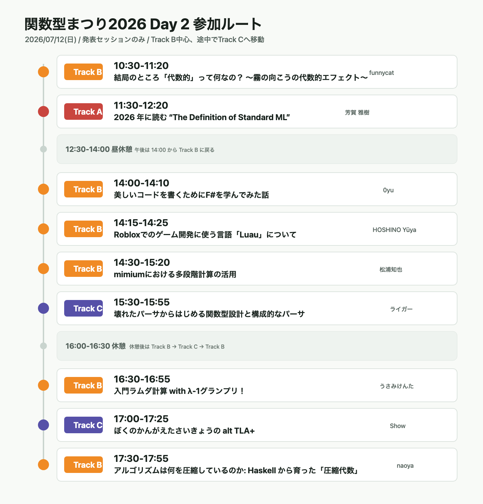

関数型まつり2026に行ってきた話
概要
今年も行ってきました
#fp_matsuri pic.twitter.com/meZFIcCXJq
— velengel (@velengel_dev) July 12, 2026
動機
- 元々予定はなかったが、たまたま土日完全オフだったので土曜を休息日にして日曜行くことに決めた
- 土日完全オフは今年に入って二回目
- 自戒：もっと休もう
- 去年思った以上に旧交があったまったので、今年も誰かいるといいなーという気持ちがあった
- あとは数学と関数型の風を浴びたかった
雑感
- 全部面白かった or/and 興味深かった ほんとに来てよかった
- 旧交はあったまらなかった
- 最初から最後までソロだった
- 昼に居酒屋で食べた刺身定食は美味しかった
— velengel (@velengel_dev) July 12, 2026
- 今日のセッションでもあったけどパーサーって学習・理解にちょうどいい大きさの問題だと改めて思った
- ある程度の正解がある
- 業プロでありがちな妙な「要求」がない
- 問題として大きすぎない
- ステップバイステップで動くものを育てる形で進められる
- いつも使っている言語の裏側の一部を触る感覚が味わえる
- ざっくり理解と厳密な証明・検証は分けて考えると効率的だとわかった
- codexにもそう観点を与えるようにした
- 最初にざっくり理解と具体例、最後に厳密な補足
- デモはやっぱいいなあと思った
- 何か視覚的にグラフが動くアプリや、音が聞こえてくるとやっぱり楽しい
- track Bの機材の調子が悪そうだった
- 前日にセッション選んでcodexに作らせた画像が大活躍だった

- 休憩が豊富なのがありがたい
- 昼が90分
- 夕方の休憩がある
- その上でクロージングも18時過ぎに終わる！早い！
- 他の勉強会だと休憩50分とかでなんならそこにもセッションが詰め込まれてたりするので
- 前日の資料で空き時間に読んだものとかをまとめるmdを作って、codexに適宜投げて感想と学びをざっとまとめるようにした
- 今までこういう情報がどっかいってた(読んで終わりになってた)ので、まとめるの大事
- わからない数学の用語とかもcodexでその場で聞けるのでとてもいい時代になったなと思った
- それでも抑えきれてない背景概念とかはまたゆっくり楽しみとして学ぶことにしましょう
- 好奇心エネルギーとしてとっておく
- 抑えきれない知識を抑えきれない好奇心エネルギーに変換
- 話だけは聞いてた関数型ドメインモデリングをぽちった
- 何か言語を作りたくなった
- 去年軽くymlのパーサーは書いてみたけど
印象に残ったセッション
午前
- 一度理解しようとして撃沈した過去をちゃんと書いていてとてもわかるとなった
- 僕も何回も撃沈している
- 右上の[理論][整理]などのラベルがわかりやすい
- ざっくり理解→厳密説明の流れがすっごく入ってきやすい
- 関手やモナドのざっくり理解で随伴から「モナドが得られる」まで持っていってもらったの本当に感謝している
- 理論側と実装側もこれもレイヤー分けしているのが良い
- 本当にモデル化と説明が上手くて綺麗だなと思う
- どこかでちゃんと厳密な意味も追っておこうと思いました
午後前半
音楽のための関数型プログラミング言語mimiumにおける多段階計算の活用
- 音のデモすごい楽しくてよかった
- こういうのしたかったんだよ、
なんで音系の研究室選ばなかったんだろうな(まだ言ってる) - やっぱLLMとかAIじゃなくて技術で思想を作ってる人ってかっこいいよね
- 生成AIに食傷気味だったので今日一日通してとても興味エネルギーが回復した
- 作りたいもののために楽しいパートとめんどいパートがあって、めんどい方を任せられるようになったと言ってたのが「わかる〜〜〜」となった
- パフォーマンスのトレードオフの図(p45)がサラッと言ってたけど泥臭い試行錯誤の上に気づいた学びなんだろうなととても敬意
- 空いてるときにmimium触ってみます
午後後半
アルゴリズムは何を圧縮しているのか ─ Haskell から育った「圧縮代数」というメンタルモデル
- 今日の中で一番視点として新しかった
- こういうモデル化をAIと対話しながらやるのは自分もしょっちゅうやってるのでとても共感できた
- Haskellちゃんとやってると抽象と具体を行き来できるようになるんですかね、やっぱり
- これも2レイヤーに分けての説明だった
- 操作的と意味的
- 圧縮代数と評価器
- 意味と評価
- 妄想スライドが一番アツかった
- 競プロの概念忘れかけでもギリ覚えてるくらいのものを例にしてくれて助かった
- セグ木とか累積話とかね
TODO/やりたいこと
- mmm触ってみる
- 関数型ドメインモデリングを読む
- なんか色々言語やパーサーを作ってみる
- ハンズオンを軽く動かしてみる